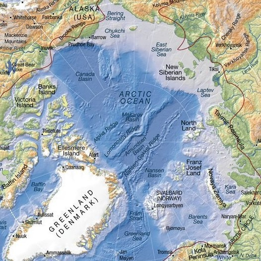

L’air glacial est tellement dense qu'il subside et s’approche de la surface à moitié gelée.
Tu frôles une flaque d’eau de mer. Les lois de la physique ne te laissent aucun choix : il te faut quitter l’air déjà riche en CO2 pour rejoindre la mer appauvrie en CO2.
Ta petite molécule se dissout dans l’eau glacée…
En surface, la mer se refroidit tant au contact de l’atmosphère qu’elle s'
alourdit et plonge à travers les eaux sous-jacentes, moins froides, qui s'écartent sur son passage.
Ton atome de carbone est entraîné en profondeur, il glisse le long de la bathymétrie vers les grands fonds marins… Tu dévies vers l’Est de la Mer de Barents.
Le courant s’accélère soudain entre les îles d’un fabuleux archipel. Emporté à vive allure, tu as tout juste le temps d’apercevoir des bancs de poissons qui dansent un ballet coloré.
Certains n’ont rien à faire là : on les trouve d’ordinaire plus au Sud, dans l’Atlantique. Or
l’eau se réchauffe, et
les espèces migrent vers les eaux froides du Grand Nord.
Lorsqu’elles le peuvent !
Les victimes du changement climatiques sont avant tout les espèces statiques et fixées à un support, comme le corail, qui n’ont pas d’autre choix que d’endurer le réchauffement.

Toi, tu dérives tel le plancton, emporté contre ton gré par le courant.
Il t’emmène vers le Nord et tu parviens enfin dans l’océan Arctique.
Deux hautes barrières sous-marines le séparent en trois bassins.
Tu déboules d’abord dans celui de Nansen, où le courant se calme soudain.
Tu te glisses alors par une brêche et rejoins le bassin d’Amundsen jusqu’à ce qu’un canyon te dévoile un passage vers le bassin du Canada.
Ton atome de carbone s’excite soudain. Le derrière lui chauffe !
C’est que des sources géothermiques crachent de la chaleur depuis le plafond océanique.
La température monte et l’eau profonde s’allège si bien qu’elle remonte doucement vers la surface…
Tu retrouves des courant plus rapides, qui t’emportent le long du Groenland, en direction de l’Atlantique.
En Mer du Groenland, l’eau de mer se refroidit de nouveau en contact avec l’atmosphère.
Elle gèle et forme de la banquise qui expulse peu à peu le sel fournit par l’eau salée.
L’eau en surface et ralourdit oar tous ces rejets de sel, elle plonge dans les profondeurs de l’Océan Atlantique et file le long de la Bathymétrie vers le Sud, direction l’Antarctique.
Ton petit atome de carbone longera les dorsales, ces chaînes de volcans sous-marins, il s’engagera dans des canyons, se perdra dans les abysses et sera emporté par des tourbillons ascendants.
La turbulence le jettera dans le puissant courant circumpolaire qui galope autour de l’Antarctique.
Tu tourneras en boucle pendant des années…